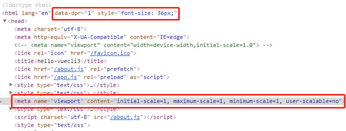
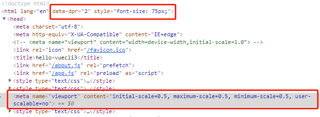
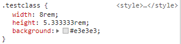

vue-cli3 移动端项目中 px 转 rem 的适配,转自于 秋风 2016
Quick Start
安装 flexible 和 postcss-px2rem（命令行安装）
1 | $ npm install lib-flexible --save |
简要介绍这两个包的用途：
flexible 会为页面根据屏幕自动添加标签，动态控制 initial-scale，maximum-scale，minimum-scale 等属性的值。
例如在 Galaxy S III:

例如在 iphone6/7/8:

postcss-px2rem 会将 px 转换为 rem，rem 单位用于适配不同宽度的屏幕，根据标签的 font-size 值来计算出结果，1rem=html 标签的 font-size 值。
引入 lib-flexible
在项目入口文件 main.js 中引入 lib-flexible
1 | import 'lib-flexible' |
注意事项（important）: 由于 flexible 会动态给页面 header 中添加标签，所以务必请把目录 public/index.html 中的这个标签删除！！！
配置postcss-px2rem
vue-cli3 构建的项目相较于vue-cli2 构建的项目精简了许多，将一些默认配置进行了更好更严密，让开发变得更高效的封装。具体请看vue-cli官网 https://cli.vuejs.org/zh/guide/
px2rem的配置放在vue-cli3 项目中vue.config.js中（找不到？可能你是一个新构建的项目，需要手动在项目根目录创建vue.config.js）
具体配置内容如下：
1 | module.exports = { |
OK，重启项目，两个用于移动端适配的包就这样可以愉快的开始使用了！！！
下面来看我们的代码，代码中我们直接用px来写宽高：
1 | .testclass { |
在浏览器中会是什么样的呢？

没错，已经从px转换成了rem。 what？如果你的没有从px变成rem, 那么你可能需要重启一下项目呦~
温馨提示： remUnit这个配置项的数值是多少呢？？？ 通常我们是根据设计图来定这个值，原因很简单，便于开发。假如设计图给的宽度是750，我们通常就会把remUnit设置为75，这样我们写样式时，可以直接按照设计图标注的宽高来1:1还原开发。
那为什么你在这里写成了37.5呢？？？那我们后面专门来讲！
之所以设为37.5，是为了引用像mint-ui这样的第三方UI框架，因为第三方框架没有兼容px2rem ，将remUnit的值设置为设计图宽度（这里为750px）75的一半，即可以1:1还原mint-ui的组件，否则会样式会有变化，例如按钮会变小。
既然设置成了37.5 那么我们必须在写样式时，也将值改为设计图的一半。